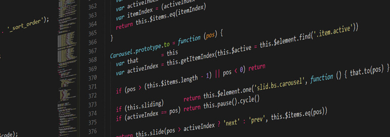

Какой язык программирования выбрать в 2023 году?
Какой язык программирования изучать в 2023 году?
Сейчас насчитывается больше 8 000 разных языков программирования (ЯП), и их количество постоянно растёт. Каждый
год, если не месяц, появляются новые, в том числе созданные just for fun, но популярных и востребованных всё же
гораздо меньше. На какие из них стоит обратить внимание новичку?
⠀
Выбор языка программирования зависит от того, чем вы хотите заняться: разрабатывать мобильные приложения, веб-сайты,
десктопные программы, модели машинного обучения или другое. Ниже вы узнаете о лучших языках программирования, пользующихся
спросом у работодателей в 2023 году. Расскажем о деталях каждого языка, его сложности и способах применения.
1. JavaScript
JavaScript — это язык программирования высокого уровня, который является одной из основных технологий интернета.
Он используется в качестве языка программирования на стороне пользователя на 97,8 процентах всех веб-сайтов.
Изначально JavaScript использовался только для разработки веб-браузеров, но теперь он применяется и для развертывания веб-сайтов
на стороне сервера, а также для приложений, не связанных с веб-браузерами.
2. C++, C
C — это, вероятно, самый старый и популярный язык программирования, который является корнем других языков программирования,
таких как C#, Java и JavaScript. C++ — это усовершенствованная версия C. Многие разработчики сегодня пропускают изучение C как
такового, в то время как другие считают, что изучение C сначала дает ценную основу для разработки на C++. Оба языка широко
используются в информатике и программировании.
⠀
Разработчики C и C++ могут использовать компиляторы для широкого спектра платформ, что делает приложения,
разработанные на этих языках, в значительной степени переносимыми. И C, и C++ считаются высокопроизводительными
языками. Поэтому они широко используются при разработке приложений, где производительность является критически
важным вопросом, таких как приложения клиент/сервер, коммерческие продукты и видеоигры.
3. Golang
Go, также известный как Golang, был создан для удовлетворения потребностей программистов, работающих над большими проектами.
Он завоевал популярность среди многих крупных ИТ-компаний благодаря своей простой и современной структуре и привычному синтаксису.
Среди компаний, использующих Go в качестве языка программирования, — Google, Uber, Twitch, Dropbox и многие другие. Go также набирает
популярность среди специалистов по обработке данных благодаря своей гибкости и производительности.
4. Python
Python — один из самых популярных языков программирования на сегодняшний день,
который легко изучить новичкам благодаря его читабельности. Это бесплатный язык
программирования с открытым исходным кодом, с обширными модулями поддержки и развитием
сообщества, легкой интеграцией с веб-сервисами, удобными структурами данных и настольными
приложениями с графическим интерфейсом. Это популярный язык программирования для приложений машинного обучения и глубокого обучения.
5. Java
Java — один из самых популярных языков программирования, используемых сегодня.
⠀
Принадлежащий корпорации Oracle, этот язык программирования общего назначения
с объектно-ориентированной структурой стал стандартом для приложений, которые
могут использоваться независимо от платформы (например, Mac, Windows, Android,
iOS и т.д.) благодаря своим возможностям Write Once, Run Anywhere (WORA).
В результате Java получила признание благодаря своей переносимости на разные
платформы, от центров обработки данных на мэйнфреймах до смартфонов. Сегодня
насчитывается более 3 миллиардов устройств, на которых работают приложения, созданные на Java
6. C#
Разработанный компанией Microsoft, C# приобрел известность в 2000-х годах благодаря поддержке концепций
объектно-ориентированного программирования. Это один из самых используемых языков программирования для
платформы .NET. Андерс Хейлсберг, создатель C#, говорит, что этот язык больше похож на C++, чем на Java.